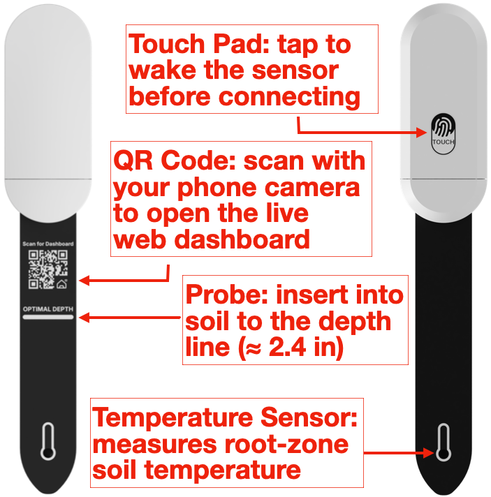

Connect a device to access calibration, temperature offset, firmware update and reset.
📦 Firmware
--
🚀 New firmware -- available
Update to get the latest fixes and features.
What's new
🎯 Sensor calibration
Improves moisture accuracy for your soil. Put the probe in the matching state, tap the button, and the device recalibrates from a fresh reading.
Connect a device to enable calibration
🌡️ Temperature offset
Trim the reading by up to ±10 ℃. Saved on the device until you reset it.
0.0 ℃
-10.0 ℃+10.0 ℃
🏷️ Device name
A display name kept on the device and shown in this dashboard. Up to 20 printable ASCII characters.
It does not change the name in your phone's Bluetooth list.
ℹ️
This name is for the dashboard display only — your phone's Bluetooth list keeps the
built-in name “SoilPulse”, so nothing needs to be re-paired in Home Assistant.
0 / 20 bytes
♻️ Reset
Clears history, calibration, device name and the renamed Bluetooth address (back to the
factory MAC), then reboots. The connection will drop.
Introduction
SoilPulse watches your soil — moisture, temperature and battery. Just plant, connect, and check on the spot.
Live soil metrics — true root-zone moisture & temperature (not surface estimates), plus battery status.
No app required — open directly in the Bluetooth-enabled browser.
Seamless Home Assistant integration, no gateway needed.
Meet Your Sensor

Setup
Insert 2× AAA batteries, matching +/−.
Plant the probe to the OPTIMAL DEPTH line (≈ 2.4 in).
Tap the touch pad once to wake it.
Choose your setup method — follow the guides below to connect via Web Dashboard or Home Assistant.
Connect — Web Dashboard
Requires a Bluetooth-enabled phone or PC with Bluetooth turned on.
Scan to open Dashboard
• Opens in your browser instantly
• Built-in interactive setup guide
Can't find it? Tap Connect device and allow Bluetooth permissions.
• Android / PC: Use Chrome.
• iPhone / iPad: Download & use Bluefy (Safari/Chrome on iOS don't support Web Bluetooth).
Connect — Home Assistant
Speaks BTHome, so it connects with no hub.
Settings → Devices & Services → Add device.
Tap the sensor's touch pad to wake it.
HA adds temperature, moisture & battery.
Using the Web Dashboard
Data Tab — live temperature, moisture & battery; history with last 5 readings and 7-day average charts.
Refresh & Clear — Refresh triggers an immediate measurement. Clear data clears local history data.
Setting Tab — dry/wet calibration for moisture sensors, temperature offset adjustments, factory reset to restore defaults, and firmware updates (shows automatically when a new version is available).
Troubleshooting
Can't connect? Tap the touch pad to wake it, allow Bluetooth permissions, then tap Connect device.
No new data? Connect and tap Refresh — new data should arrive within a few minutes.
Odd moisture? Insert the probe to the OPTIMAL DEPTH line without leaving loose gaps in soil.
Shows unavailable in Home Assistant? This is normal. The sensor updates every 10 minutes to save power — new data will still arrive automatically.
Questions or feedback? Please email us — we're happy to help. Thank you for your support!
FCC Statement
Complies with Part 15 of the FCC Rules. Operation is subject to two conditions: (1) it may not cause harmful interference, and (2) it must accept any interference received.
This equipment complies with the limits for a Class B digital device under Part 15. If it causes harmful interference, try one or more of the following: